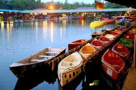
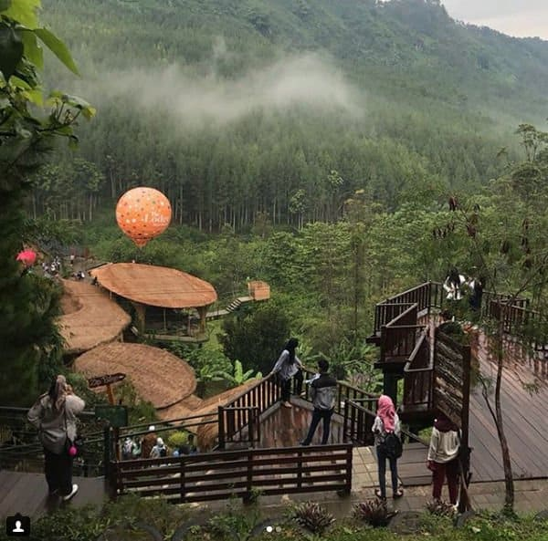
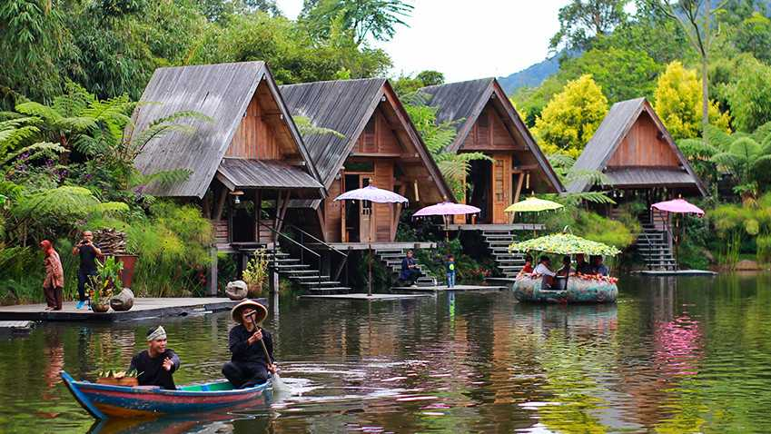
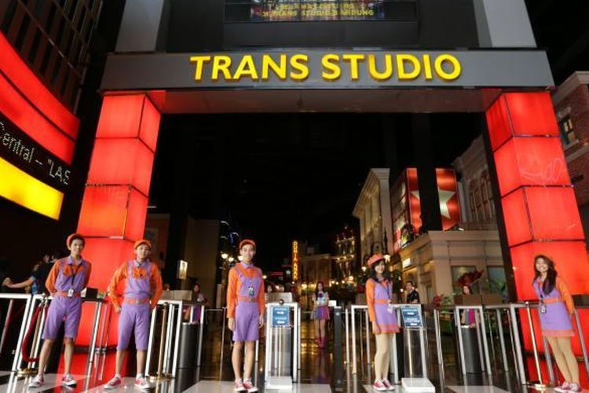

Grafika Cikole Pada masa awal pendirian fasilitas wisata ini, Grafika Cikole didirikan hanya untuk penginapan dan restoran.
Namun dalam perkembangan selanjutnya pengelola melihat adanya potensi besar kawasan yag bisa dimaksimalkan.
Hal ini terindikasi dari tingginya kunjungan yang bukan untuk makan dan menginap, tapi hanya mau berwisata saja. |

Floating Market Lembang Pada awalnya, floating market Lembang tidak begitu luas. Tapi sekarang sudah ekspansi dan memiliki banyak objek menarik baru.
Nama floating market ini sepertinya merujuk pada stand tempat jualan makanan yang berada dalam perahu.
|
Dago Dream ParkDago Dream Park mulai beroperasi sekitar Juli 2016, dan langsung menyedot animo pengunjung. Tipikal destinasi wisata di Bandung sepertinya memang begitu sih. Asalkan bagus, terdapat fasilitas lengkap, dan banyak spot selfie, biasanya langsung di serbu pengunjung. |

De Ranch LembangDe Ranch Lembang merupakan salah satu tempat wisata di Lembang yang populer. Tempatnya strategis, ngga jauh dari pusat kota Lembang sehingga mudah dijangkau. Konsep tempat wisata keluarga di Bandung ini mengusung konsep Western/Cowboy. Kita bisa bermain atau menunggang kuda, berfoto dengan kostum koboy yang tersedia, mengelilingi area dengan kuda, dan lain sebagainya. |
|

The Lodge MaribayaThe Lodge Maribaya adalah salah satu tempat wisata di Lembang yang menawarkan berbagai hal pada pengunjung. Disini kita bisa melakukan berbagai akitivitas seperti camping, trekking mengelilingi area hutan pinus yang indah, acara gathering dan team building, atau bahkan hanya sekedar refreshing menikmati kuliner |

Farm HouseSebagai salah satu tempat wisata lembang baru, Farm house Lembang mulai beroperasi sekitar tahun 2015. Tempat wisata di Bandung biasanya terbantu naik oleh medsos, terutama facebook dan instagram. Tampaknya tempat ini memaksimalkan banget hal ini |
|

Dusun BambuDusun Bambu Family Leisure Park adalah sebuah kawasan wisata favorit yang banyak dikunjungi wisatawan terutama asal perkotaan seperti Jakarta. Gunung dekat Dusun Bambu ini memiliki pemandangan alam yang sangat indah serta asri juga berhawa sangat sejuk |

Kampung Gajah WonderlandSebuah tempat wisata dengan sarana belanja dan kuliner dalam satu spot yang sama di daerah Bandung Barat.Di Kampung Gajah, kita dapat dapat melihat Kota Bandung dari ketinggian. Di sinilah salah satu tempat untuk melihat pemandangan terindah Kota Kembang. Udaranya juga sangat segar |

Saung Angklung UdjoSaung Angklung Udjo yang mulai berdiri tahun 1966, merupakan destinasi rekreasi dan edukasi mengenai budaya Sunda. Lengkap dengan bale pertunjukan, aneka kerajinan bambu, dan juga workshop tentang alat musik dari bambu |

Trans Studio BandungTaman bermain kini sudah menjadi salah satu destinasi wisata yang dicari-cari banyak orang. Selain karena letaknya yang strategis di daerah perkotaan, di taman bermain kamu juga bisa mendapatkan banyak hiburan dari permainan yang tersedia |

Kawah PutihObjek wisata Kawah Putih Bandung terletak di daerah Bandung selatan. Dikelilingi oleh kebun teh Walini yang indah dan terawat, disertai dengan suasana yang tenang dan segar amat memikat siapapun yang berlibur ke daerah ini. Kawah putih sendiri merupakan kawah bekas letusan gunung patuha di sekitar abad 10 |

Museum Geologi BandungDari sekian banyak museum yang ada di Indonesia, salah satu nya yang tertua adalah museum geologi bandung. Di tempat ini banyak menyimpan fosil |